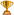
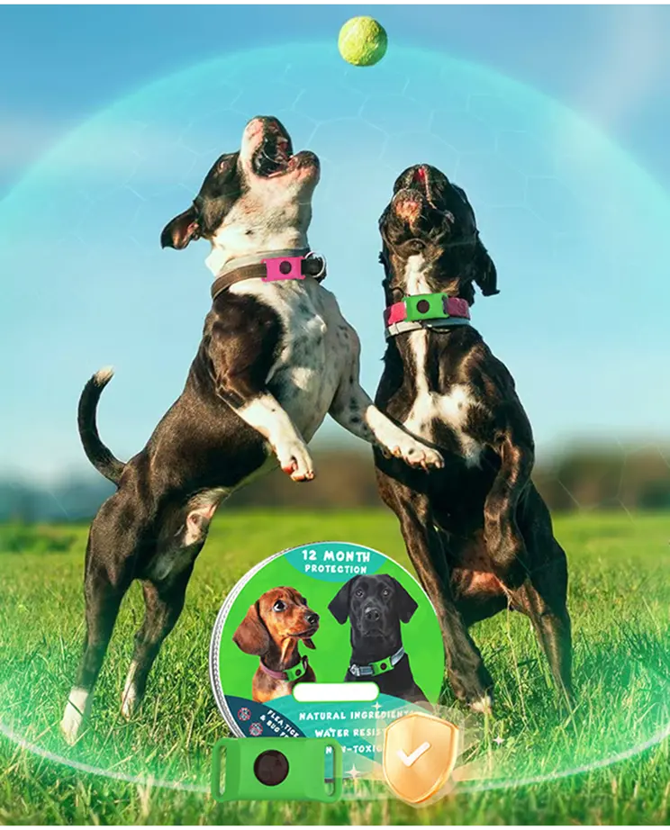
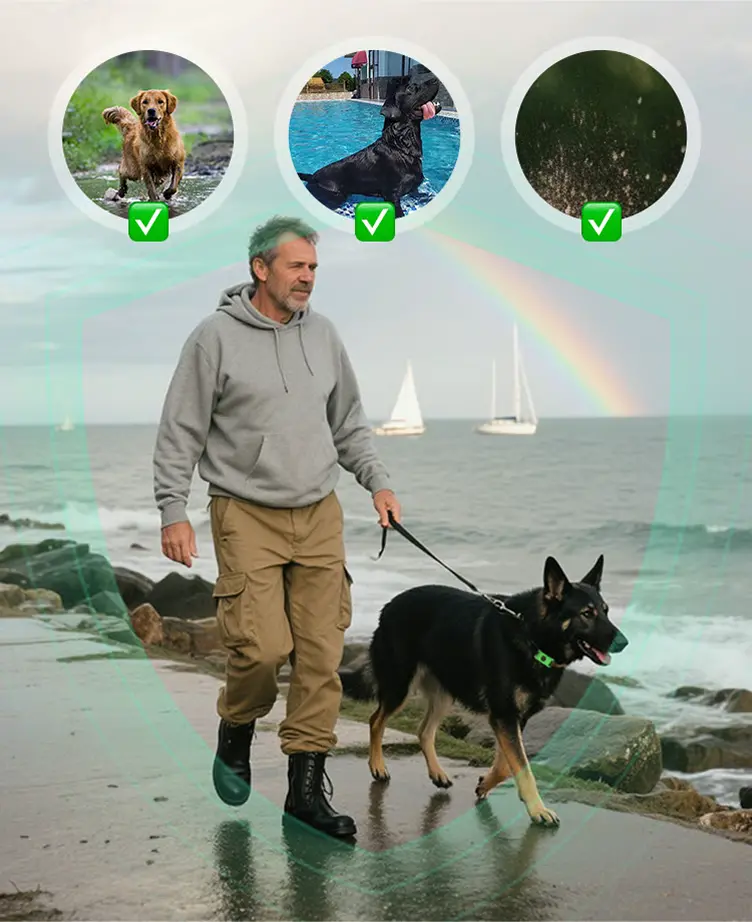
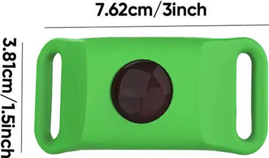
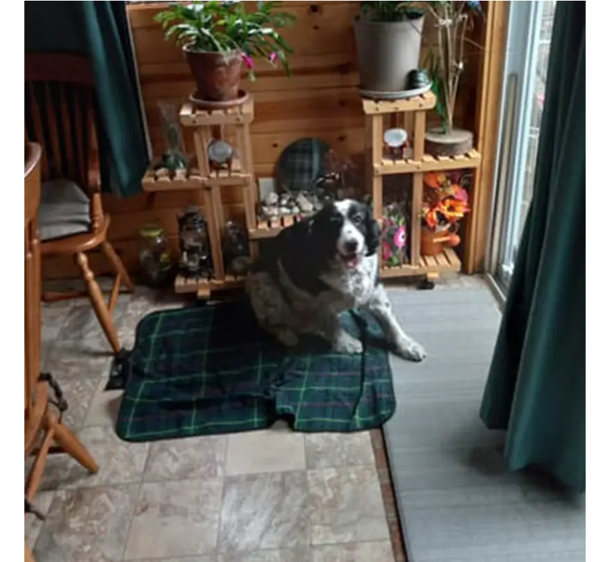
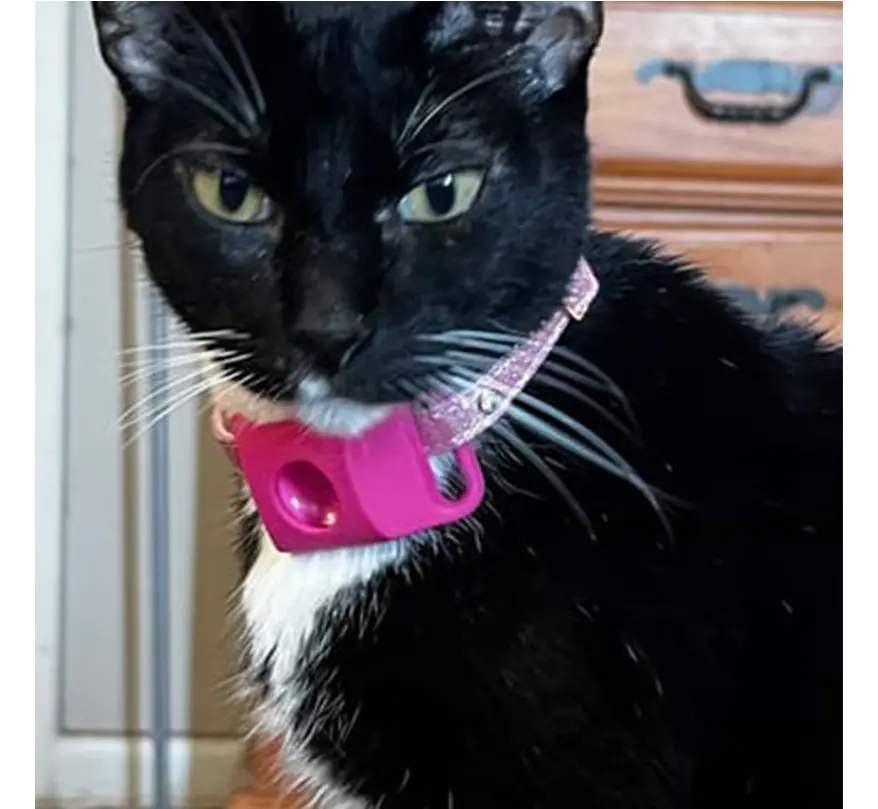
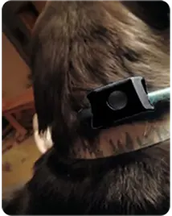
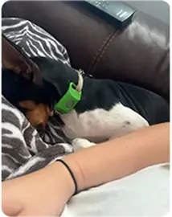

ALEGEREA UTILIZATORILOR 2025 Rezultate dovedite: 10.341+ vândute
Rezultate dovedite: 10.341+ vândute
 #1 Cel mai
vândut
în protecția naturală împotriva puricilor și căpușelor –
raport Trim. I
#1 Cel mai
vândut
în protecția naturală împotriva puricilor și căpușelor –
raport Trim. I
12 Luni Fără Purici
și Căpușe
Protecție naturală,
confort toată ziua
și liniște tot
anul
Grăbește-te înainte să crească iar prețul!

Ușor de folosit – prinde-l de zgardă câinelui și uită de dăunători.
Rezistent la apă & la intemperii – ideal pentru înot, plimbări prin noroi sau aventuri pe ploaie.

Se potrivește celor mai multe zgărzi – se fixează ușor pe orice zgardă, datorită designului flexibil.

Scut de lungă durată – 12 luni de protecție continuă împotriva puricilor și căpușelor.

 Garanție de rambursare în 14 zile
Garanție de rambursare în 14 zile
 Stoc limitat
Stoc limitat
Garanție de satisfacție 100%
Animalele (și stăpânii lor) îl adoră - Iată de ce acest medalion este indispensabil pentru protecția împotriva puricilor și căpușelor


10,000+
Clienții oferă recenzii pozitive
- Ingrediente 100% naturale
- Protecție continuă de 12 luni
- Rezistent la apă și intemperii
- Fără chimicale sau picături incomode
- Se întinde pentru orice zgardă
- Compatibil cu recomandările veterinare și ușor de folosit
70% dintre proprietarii de animale se îngrijorează din cauza puricilor și căpușelor?
>Încearcă „12 luni fără purici și căpușe”!

GLISEAZĂ 360° PENTRU A
VEDEA PRODUSUL


Protejează-ți animalul
în mod natural
Ține puricii și căpușele la distanță — fără chimicale, stres sau vizite la veterinar.
Protecție blândă și eficientă
tot timpul anului
Un medalion simplu, o barieră puternică —
îți apără animalul până la 12 luni.

Sigur pentru câini și pisici, dur
cu dăunătorii
Realizat din uleiuri esențiale precum citronella și lemn de cedru — fără toxine, fără iritații.

Gata de aventură, fără griji
Ploaie? Noroi? Înot în râu? Nicio problemă. Medalionul protejează neîntrerupt.

Prinde-l și gata
Fără picături. Fără pastile. Doar îl atașezi de zgardă — gata în câteva secunde.

Comparație de caracteristici
Specificații produs
-
Dimensiuni:
1 × 3,81 × 7,62 cm
-
Greutate:
80 g
-
Culori:
Negru, Roz, Verde

Iată de ce proprietarii de animale au încredere în „12 luni fără
purici
și căpușe”
Este o alegere foarte bine cotată pentru protecția naturală — mii de stăpâni fericiți o apreciază pentru siguranță, simplitate și eficiență pe tot parcursul anului!
Funcționează grozav. Nici purici, nici căpușe sau alte insecte pe doodle-ii mei cu blană deasă.


Chiar funcționează. L-am rugat pe frizerul canin să-l verifice de purici sau căpușe și nu avea niciunul. De asemenea, a încetat să se scarpine.


Ne plac medalioanele. Ambii noștri câini au deja și, cum am luat un al treilea cățel, vom comanda încă unul și pentru ea. Mulțumim pentru aceste medalioane grozave care ajută la protecția împotriva puricilor și căpușelor.


Întrebări frecvente (FAQ)
Medalionul nostru conține un amestec sinergic de ulei de camfor, ulei de dud, ulei de citronella, ulei de lavandă, ulei de lămâie și ulei de mentă.
Nu, medalionul trebuie purtat doar când sunteți afară sau doriți ca patrupedul să fie protejat. Ingredientele active se distribuie în aer.
Medalionul este recomandat pentru căței și pisoi începând cu a opta săptămână.
Da, este complet sigur. Medalionul folosește doar uleiuri esențiale 100% naturale — fără substanțe chimice sau pesticide. Este conceput să fie blând cu animalul și, în același timp, eficient împotriva puricilor, căpușelor și altor insecte. Ca la orice produs nou, monitorizați-vă animalul în primele zile. Dacă observați iritații, scoateți medalionul și consultați medicul veterinar.
Absolut. Medalionul este rezistent la apă și la intemperii, astfel că nu își pierde eficiența dacă câinele înoată, se joacă în ploaie sau în noroi. Este conceput să funcționeze în orice condiții.
Medalionul se poartă pe zgardă — nu direct pe piele — și conține uleiuri naturale, de obicei bine tolerate. Totuși, în cazuri rare, animalele cu piele sensibilă pot prezenta iritații ușoare. Dacă observați roșeață sau mâncărime, scoateți medalionul și discutați cu veterinarul.
 Garanție de rambursare în 14 zile
Garanție de rambursare în 14 zile
 Stoc limitat
Stoc limitat

I-am pus-o câinelui și am uitat de ea — fără scărpinat, fără purici, doar liniște.

Mergem des în drumeții cu câinele și acest medalion ține căpușele la distanță fără substanțe chimice dure. Îl iubim!